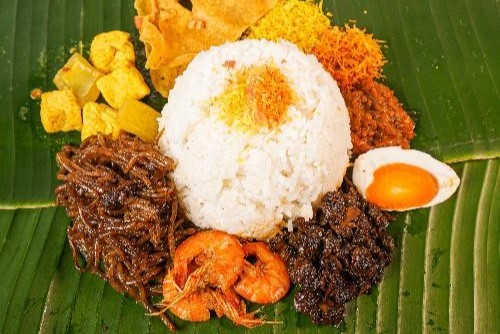
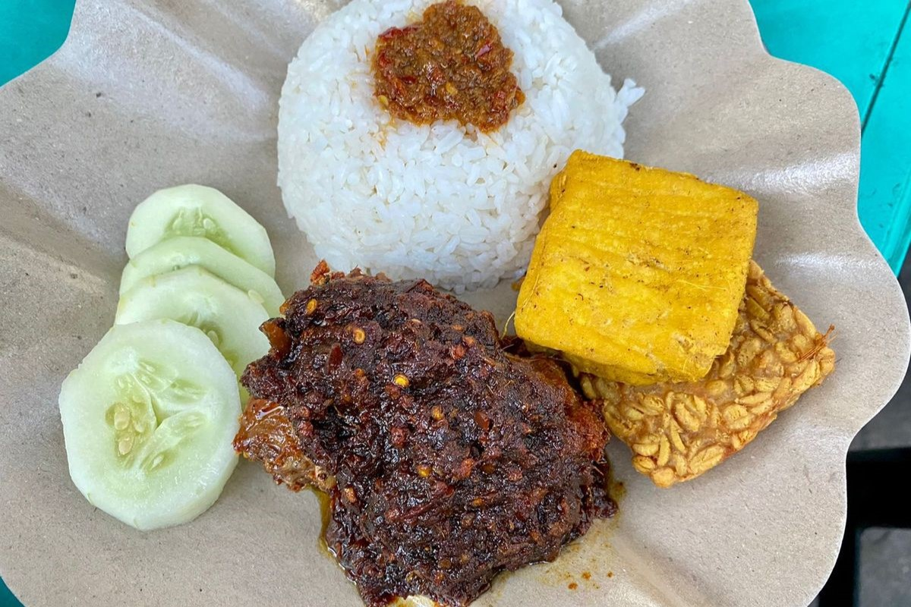
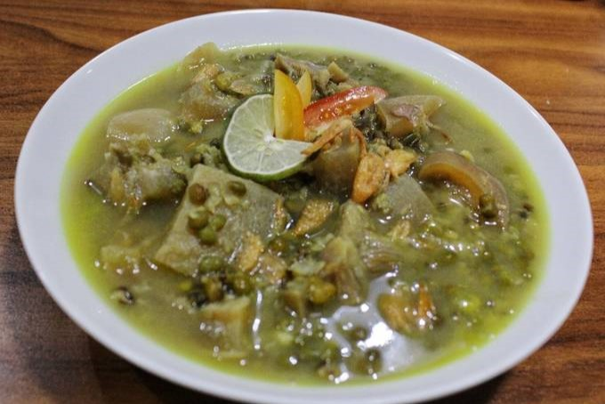
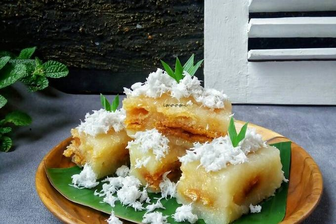
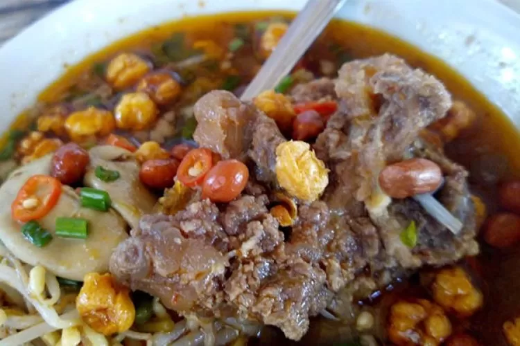
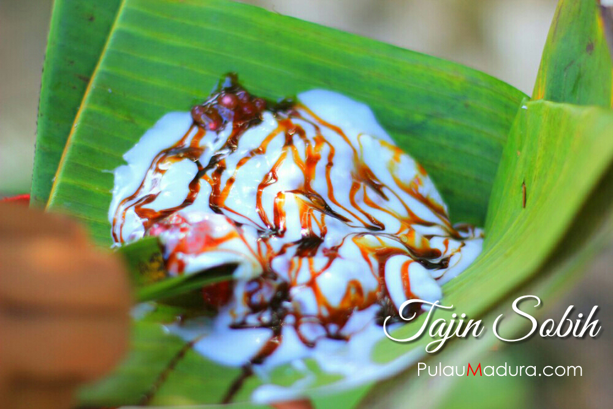
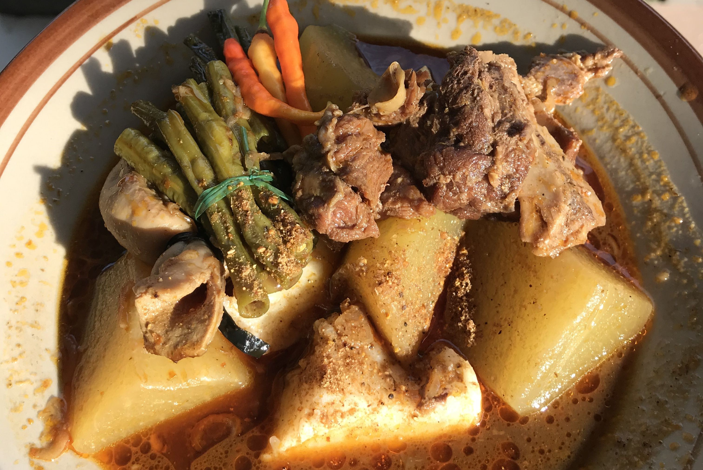

Kuliner Khas Madura!

Sate Ayam Khas Madura
Daging ayam yang juicy dibalur bumbu kacang yang lezat dan nikmat.

Nasi Serpang
Paduan nasi aromatik dengan bumbu rempah khas yang menggugah selera.

Bebek Bumbu Hitam Khas Madura
Sajian pedas dengan cita rasa yang mendalam dan menggoda.

Kaldu Kokot
Sup kaya rasa dengan potongan daging empuk yang menyentuh jiwa.

Los Elos
Makanan penutup manis yang lembut dan memanjakan lidah dengan rasa khas yang tak terlupakan.

Dhun Adhun
Hidangan beras yang dimasak dengan rempah-rempah, daging, dan sayuran, menghasilkan cita rasa yang kaya dan menggugah selera.

Tajin Sobih
Perpaduan ketan, tepung terigu, gula merah menciptakan rasa manis dan gurih yang mampu mengunggah selera.

Topak Ladeh
Makanan khas yang hanya muncul saat lebaran menambah kehangatan dan makna pada setiap momen perayaan.